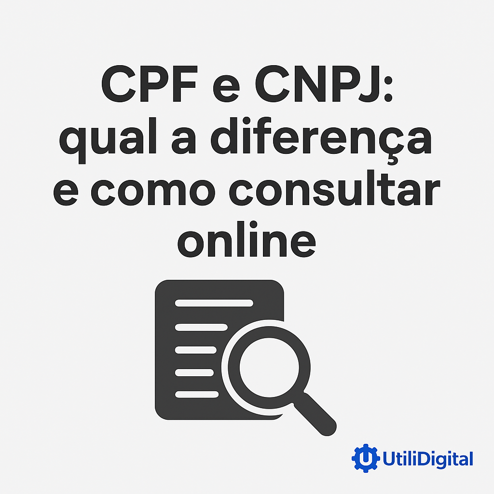

CPF e CNPJ: qual a diferença e como consultar online
O CPF e o CNPJ fazem parte do dia a dia de milhões de brasileiros, mas ainda geram dúvidas em muitas situações. Embora ambos sejam números de identificação, cada um tem uma função específica: o CPF é para pessoas físicas, enquanto o CNPJ é para empresas e organizações.
Neste artigo, você vai entender as diferenças, quando cada documento é usado e como consultar essas informações de forma rápida e prática.
üîé O que √© o CPF?
O Cadastro de Pessoas Físicas (CPF) é um número único emitido pela Receita Federal para identificar cada cidadão brasileiro. Ele é essencial para:
- Abrir contas bancárias
- Declarar imposto de renda
- Fazer compras parceladas
- Participar de concursos públicos
- Realizar operações financeiras em geral
Em resumo, o CPF é a sua “identidade financeira” no Brasil.
üè¢ O que √© o CNPJ?
O Cadastro Nacional da Pessoa Jurídica (CNPJ) é o equivalente do CPF para empresas, organizações e instituições. Ele também é emitido pela Receita Federal e é usado para:
- Emitir notas fiscais
- Abrir contas bancárias empresariais
- Participar de licitações
- Formalizar contratos
- Atuar legalmente no mercado
Sem um CNPJ ativo, uma empresa não pode funcionar de forma regular no país.
⚖️ Principais diferenças entre CPF e CNPJ
| Característica | CPF | CNPJ |
|---|---|---|
| Quem recebe | Pessoas físicas | Empresas e organizações |
| Quantidade de dígitos | 11 | 14 |
| Emissor | Receita Federal | Receita Federal |
| Finalidade | Identificação de cidadãos | Identificação de empresas |
üåê Como consultar CPF e CNPJ online
Hoje em dia, é possível verificar rapidamente a situação de um CPF ou CNPJ através de serviços digitais. Essas consultas podem trazer informações como:
- Situação cadastral (regular, suspenso, cancelado, etc.)
- Data de abertura (para CNPJs)
- Nome ou razão social vinculada
üëâ Experimente nossa ferramenta gratuita de Consulta CPF e CNPJ e tenha acesso imediato √†s informa√ß√µes.
✅ Conclusão
O CPF e o CNPJ são documentos fundamentais no Brasil, cada um com sua função específica. Enquanto o CPF garante a identidade financeira do cidadão, o CNPJ permite que empresas atuem legalmente no mercado.
Com ferramentas online, ficou ainda mais fácil consultar esses dados de forma rápida e prática — seja para conferir a regularidade de um documento ou garantir mais segurança em transações.
üìå Dica final: sempre utilize fontes confiáveis ao realizar consultas. Nossa ferramenta online foi desenvolvida para trazer praticidade e seguran√ßa no acesso a essas informa√ß√µes.